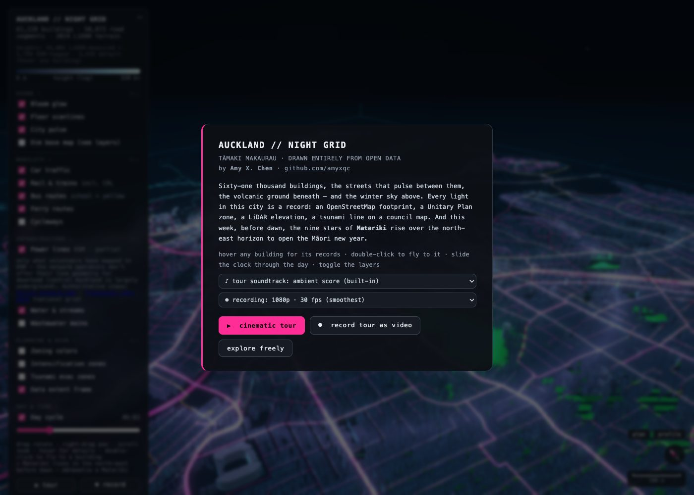

012026-10 · Climate risk · Real estate

A private flood model puts 40 times more of Chicago in the 100-year flood zone than FEMA
FEMA's map puts 0.3% of Chicago properties in the 100-year flood zone; First Street's model, which counts heavy rain, puts 12.8% there. Buyers now see the private score next to the price.
LinkedIn post: Climate risk is priced at the search
022026-10 · Permitting · Infrastructure

New York's 1-year deadline covers less than half the wait for a siting permit
New York met its 1-year legal deadline on every renewable siting permit, but the wait before the deadline starts (getting an application declared complete) averaged 1,094 days in 2020–23.
LinkedIn post: AI won't fix permitting on its own
032026-10 · Governance

What Planners Decide
Explorable bubble charts of 19,000+ decisions at NYC City Planning, Manhattan community boards, Boston and SF, with a real example for each topic.
Open project ↗
042026-07 · Maps · Real estate

Auckland // Night Grid
A 3D data portrait of central Tāmaki Makaurau: 61,000 buildings with LiDAR heights, terrain, the Unitary Plan and transit, in one HTML file.
Open project ↗
052026-04 · Climate risk · Maps

The Bronx River: A Story of Return
Two decades of restoration on an urban river: herring, dams, and the 1.4 million people who share the watershed.
Open project ↗